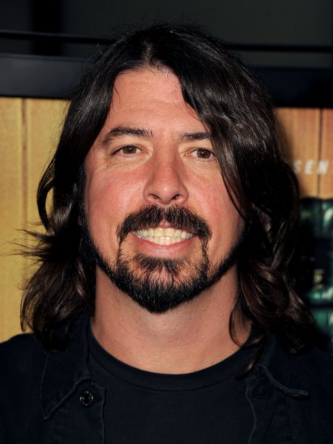
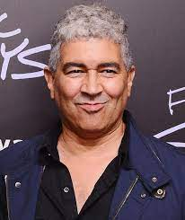
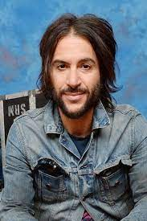
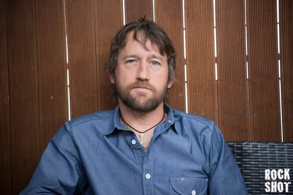
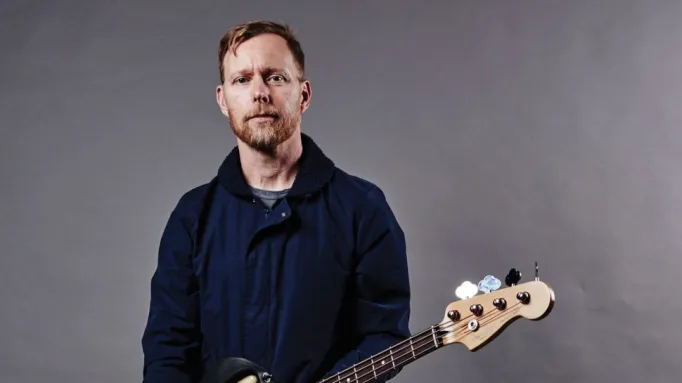
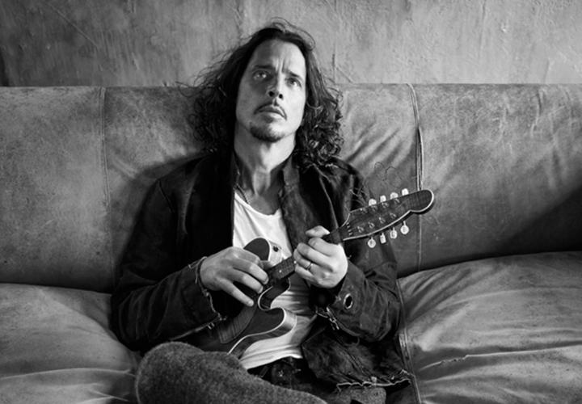
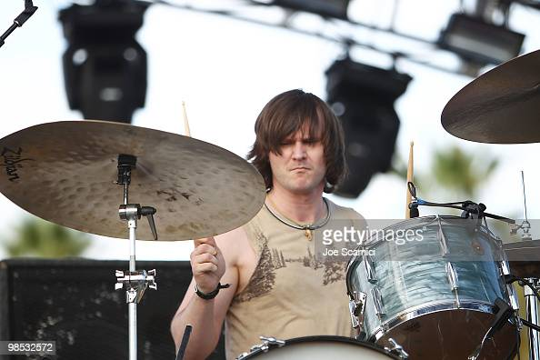
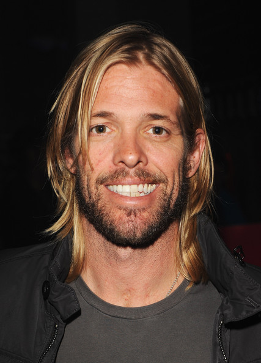
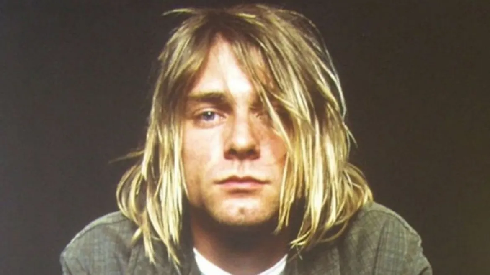

"
Now that I've found my reward
I'd throw it away long before
I'd share a piece of mine with you "
História da banda
Foo Fighters é uma banda de rock americana formada em 1994, em Seattle, Washington. A banda foi fundada pelo ex-baterista do Nirvana, Dave Grohl, como um projeto de um homem só, após a dissolução do Nirvana, devido ao suicídio de Kurt Cobain. O projeto recebeu o nome de Foo Fighter, um apelido cunhado pelos pilotos de aviões estadunidenses para OVNIs e outros fenômenos aéreos. Ao longo de sua carreira o Foo Fighters ganhou 12 prêmios Grammy, sendo quatro vezes o de Melhor Álbum de Rock
Artistas da banda

Em 1990, Dave Grohl entrou para a banda grunge Nirvana como baterista. Nesse período, ele levava uma guitarra com ele e compunha músicas, mas ficava muito intimidado para compartilhá-las com a banda; ele era "incrédulo" com a qualidade com as músicas escritas pelo vocalista Kurt Cobain.Saber mais
Georg Albert Ruthenberg mais conhecido como Pat Smear, é um músico estadunidense. Fez parte da banda de punk rock The Germs e tocou com o Nirvana em algumas apresentações entre 1993 e 1994, participando inclusive do MTV Unplugged in New York e do álbum ao vivo From the Muddy Banks of the Wishkah.Saber mais
Rami Jaffee é um músico americano, tecladista das bandas Foo Fighters e The Wallflowers. Ele trabalhou com muitos artistas, incluindo Pete Yorn, Soul Asylum, Stone Sour, Joseph Arthur e Coheed and Cambria.Saber mais
Traduzido do inglês-Christopher Aubrey Shiflett é um músico americano. Ele é mais conhecido como guitarrista principal da banda de rock americana Foo Fighters. Anteriormente, ele foi membro das bandas de punk rock No Use for a Name e Me First e the Gimme Gimmes.Saber mais
Nate Mendel é um músico estadunidense, conhecido por tocar baixo na banda de rock alternativo americana Foo Fighters. Também é conhecido por ser o baixista da banda Sunny Day Real Estate.Saber mais
Traduzido do inglês-Franz Kenneth Stahl é um guitarrista americano, mais conhecido por ser membro da banda de punk hardcore Scream, de Washington, D.C., com seu irmão Peter Stahl, e da banda de rock alternativo Foo Fighters, liderada pelo ex-baterista do Scream e Nirvana Dave Grohl.Saber mais
Traduzido do inglês-William Goldsmith é um baterista americano mais conhecido como membro do Sunny Day Real Estate e ex-membro do Foo Fighters. Atualmente tocando bateria para o Assertion, ele fez turnês com Mike Watt e IQU, se apresentou em muitas gravações e tocou ao vivo com várias bandas e artistas.Saber mais
Oliver Taylor Hawkins foi um músico norte-americano, mais conhecido como o baterista da banda de rock Foo Fighters.Saber mais
Kurt Donald Cobain foi um cantor, compositor e músico norte-americano famoso por ter sido o fundador, vocalista e guitarrista da banda Nirvana.Saber mais
The Colour and the Shape é o segundo álbum de estúdio da banda de rock norte-americana Foo Fighters, na verdade o primeiro disco gravado como uma banda, visto que o primeiro disco, chamado "Foo Fighters" foi gravado inteiramente por Dave Grohl.
Echoes, Silence, Patience & Grace é o sexto álbum de estúdio da banda Foo Fighters, lançado no dia 25 de setembro de 2007. Neste álbum, eles voltam a trabalhar com o produtor Gil Norton, que não produzia um disco do Foo Fighters desde The Colour and the Shape, de 1997.
Wasting Light é o sétimo álbum de estúdio da banda estadunidense de rock Foo Fighters, lançado no dia 12 de abril de 2011. Foi produzido por Butch Vig e é o primeiro a ter o guitarrista Pat Smear como um membro oficial desde 1997.